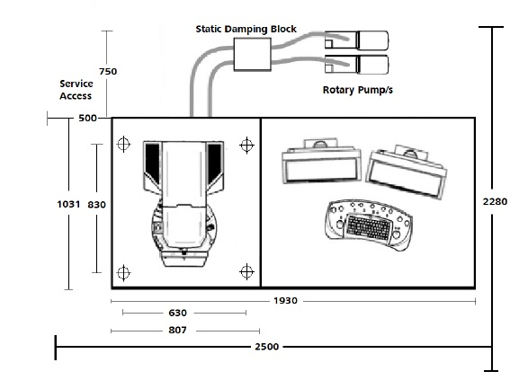

SEM-50
Растровый (сканирующий) электронный микроскоп
Исследование поверхности и морфологии образцов.

Технические характеристики
Предварительные данные
- Метод
- Растровая (сканирующая) электронная микроскопия (РЭМ, SEM)
- Источник электронов
- Термоэмиссионная пушка с катодом из вольфрама или гексаборида лантана
- Ускоряющее напряжение
- 0,5–30 кВ
- Увеличение
- 15×–300 000×
- Зондовый ток
- 0,5 пА – 5 мкА
- Целевое разрешение
- До 3 нм при 30 кВ (SE)
- Управляющее ПО
- Уточняется
Детекторы
- Детектор вторичных электронов (SE).
- Четырёхсегментный полупроводниковый детектор отражённых электронов (BSE).
- Детектор вторичных электронов для работы при переменном давлении (VPSE) с регистрацией катодолюминесценции.
Столик образцов
Пятиосевой, полностью моторизованный.
- Ход по XY
- 130 мм
- Ход по Z
- 50 мм
- Наклон
- от −10° до 90°
- Вращение
- 360°
- Максимальная масса образца
- 0,5 кг
Предварительная комплектация
Справочный перечень из материалов EVO. Состав поставки SEM-50 уточняется.
- Базовый блок микроскопа в сборе.
- Стол оператора, сдвоенный джойстик и панель управления.
- Форвакуумный насос с ловушкой масляного тумана и вакуумным шлангом.
- Управляющий компьютер с монитором. Состав ПО уточняется.
Размещение и требования к помещению
Ориентиры для планирования взяты из материалов EVO. Требования к установке SEM-50 уточняются.
- Размер помещения
- 4 × 5 × 2,5 м
- Сервисная зона
- Не менее 1 м с каждой стороны прибора
- Доставка до места монтажа
- Проёмы от 0,8 м, проход без лестниц
- Электропитание
- 220 / 230 В, 50 Гц
Источник бесперебойного питания от 6 кВА - Температура
- 21 ± 4 °C, изменение до 0,5 °C/ч
- Относительная влажность
- Менее 65%
- Акустический шум
- 53 дБ при 31,5–200 Гц
42 дБ при 200–300 Гц
50 дБ выше 300 Гц
Несущая способность пола, заземление, допустимые вибрации и электромагнитный фон согласовываются для площадки.
